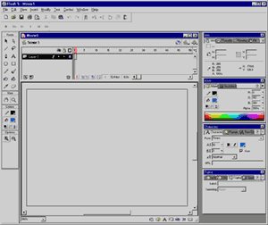
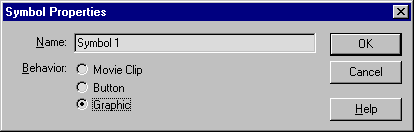
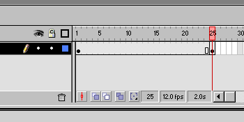
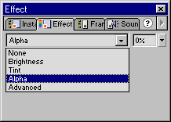

Macromedia Flash 5 (часть первая)
Рубен Сардарян, [email protected]
Как вы думаете, реально ли уместить страничку, содержащую
приличное количество анимации, звука и удивительных способов интерактивности в
файл порядка 100kb? Сделать так, чтобы эта страница работала одинаково как в
Netscape Navigator (NN), так и в Internet Explorer (IE)? Компания Macromedia
решила большинство проблем совместимости и производительности, выпустив Flash,
который к сегодняшнему дню весьма эволюционировал и является полноценной частью
инструментов / техник web-дизайна.
Коротко и ясно о том, что это такое. Существуют plug-ins
(примочки), которые встраиваются в браузер (web browser), и служат для просмотра
Flash страниц. Называются они Flash Player. Причем в последних версиях IE и NN
эти примочки уже встроены (если нет, то их можно бесплатно скачать с сайта
Macromedia). И существует программа Flash, с помощью которой эти страницы
создаются.
В пользу Flash приведу его основные достоинства и статистку
Macromedia.
- Маленький размер получающихся файлов и, соответственно, более быстрая
загрузка из сети. Flash использует векторный формат изображений и сжимает
растровые и звуковые файлы, (которые также могут использоваться в страницах
Flash), что очень положительно влияет на уменьшение размера страницы и время
ее скачивания.
- Устранение проблем совместимости между браузерами. В отличие от HTML,
Flash одинаково работает как в IE, так и в NN. Имеется даже специальный
вариант примочки-проигрывателя для браузеров, поддерживающих Java (Flash Java
Player).
- Мощный событийно-управляемый язык. В Macromedia Flash используется
специальный язык, при помощи которого можно создавать "интеллект" для своей
страницы. Причем если в Flash 4 это был, скорее, некий скрипт (script),
имеющий всего несколько основных функций, то в Flash 5 (несмотря на название
"ActionScript") - это почти полноценный язык программирования, с поддержкой
условий, циклов, массивов, функций и классов, которые можно наследовать.
- Красота. Да, да, именно! Flash имеет автоматическую поддержку
anti-aliasing (антиалайсинг, сглаживание контуров с помощью смешения соседних
цветов). В результате даже простая линия или кружочек, нарисованные во Flash,
выглядят приятно для глаз. Что же тут говорить о рисунках, нарисованных
профессионалами.
- Удобство. Создавать страницы во Flash под силу даже ребенку, и,
признаюсь, это весьма приятное занятие. А если обладать элементарными навыками
дизайна и рисования, открывается весь простор для Вашей фантазии,
предоставляемый Flash.
- Распространенность. Flash потихоньку становится стандартом де-факто
(см. статистику ниже). В случаях, где необходима широкая интерактивность,
графика, звук, и маленький размер, Flash незаменим.
Статистика такова:
На сегодняшний день Flash Player используют 222 миллиона
человек, и каждый день его скачивает еще 1.4 миллиона. По данным Macromedia это
позволяет 90% пользователей Сети просматривать страницы с Flash содержимым.
Примочки распространяются бесплатно, в то время как за
программу создания Flash файлов приходится платить. Последняя, 5-я версия
продукта стоит $399. Пользователям старых версий это удовольствие достанется за
$149.
К написанию этой статьи меня привело желание осветить для
достаточно широкого круга людей пятый Flash (Flash 5). Дело в том, что
большинство ресурсов по Flash - на английском языке. В русскоязычной части сети
эта ценная информация отсутствует. Я даже знаю пару российских сайтов, сделанных
нашими же ребятами, но на английском языке. (Причем это - самое стоящее из того,
что есть). Понятно, что люди делают сайты на английском, т.к. использование
русского языка сильно сужает аудиторию: Тем не менее, я считаю, что есть смысл в
создании ресурсов, доступных широкой публике, на русском.
Эта (первая) часть статьи - обзорная. О том, стоит ли писать
продолжение, я буду судить по Вашим откликам. Я буду очень рад поделиться своим
опытом со всеми читателями и посвятить новичков в захватывающее действо
творчества с помощью Flash. К сожалению, у меня нет времени заниматься созданием
полноценного ресурса (сайта по Flash, скажем). Но написание иллюстрированных
обучающих статей (tutorials) в моей власти. И если интерес к этой теме будет
высок, я с удовольствием продолжу цикл, раскрывая возможности Flash 5. О том,
насколько Вас это заинтересовало, яростно пишите на [email protected].
В конце статьи имеется аннотированный список ссылок, как на
русскоязычные, так и на заморские ресурсы Flash, которые могут быть Вам
интересны.
Итак, приступим.
Будем считать, что у вас уже есть Flash 5. Программа работает
под Windows 95/98/NT/2000. Установить ее очень легко - с этим справится любой,
кто установил хотя бы парочку программ в Windows. После установки можете смело
заходить в нее, и вот, приблизительно, то, что вы увидите:

Интерфейс Flash 5 очень похож на интерфейс программ Adobe. Он
весьма удобен и легок. После некоторого времени работы с программой понимаешь,
как хорошо все продуманно и сколько труда разработчики Macromedia вложили в свое
детище.
Слева находятся панели инструментов. С помощью них можно
выбирать инструменты, а также управлять рабочей областью, модифицировать объекты
и выбирать простые цвета. Справа находятся диалоги настройки инструментов,
цвета, текста, свойства кадров и объектов. Посередине - рабочая область, где мы
будем творить, а над ней шкала времени (Timeline).
Во Flash очень интересно рисовать. Этот векторный редактор не
похож ни на один из существующих. К сожалению, подробное описание инструментов
рисования выходит за рамки данной статьи. Впоследствии, мы можем рассмотреть эти
инструменты подробнее. Самый хороший способ чему-то научится - практика при
каком-то количестве теории. В качестве практики просто поэкспериментируйте с
различными инструментами, а в качестве теории можете прочитать про это в книгах
или в Сети.
Странички (файлы, анимации - как хотите) Flash принято называть
фильмами (Movie), хотя мне больше нравится слово "мультик". Наверное, это
оттого, что во Flash имеется шкала времени и, хоть вы и обладаете безграничными
возможностями по использованию этой шкалы, ваше творение все равно будет
упорядоченно выполнятся во времени. На самом деле, вы можете останавливать,
вновь запускать мультик, прыгать с одного кадра на другой, загружать другие
мультики и много еще чего.
Процесс создания состоит в следующем. Вы создаете так
называемый "авторский файл", который имеет расширение .fla, а затем он
транслируется в результирующий .swf файл, который уже может быть просмотрен в
браузере, обрамлен с помощью HTML, и т.д. Кстати, Flash может записать ваше
творение в отдельный исполняемый .exe файл, сгенерировать java-код. И даже
сохранить в виде статического GIF изображения.
Давайте попробуем нарисовать первый простой мультик. Нам понадобятся
инструменты - "овал" и "выделение" . Выполните следующую последовательность действий:
- Выберите инструмент "овал" и нарисуйте с помощью него овал или круг в
левой части сцены.
- Далее выберите инструмент "выделение" и выделите весь овал вместе с
кромкой. Для этого либо охватите вашу фигуру прямоугольной рамкой, держа
кнопку мыши нажатой, либо два раза быстро щелкните на ней. У вас выделится
весь овал.
- Теперь войдите в меню Insert и выберите Convert to symbol (или нажмите
F8). В появившемся диалоге выберите селектор Graphic и нажмите ОК:

- Теперь выберите на шкале времени вверху 25-й кадр (просто щелкните по нему
мышкой), и выберите меню Insert -> Keyframe (или нажмите F6). Этим вы
создадите так называемый "ключевой кадр" на 25-м кадре вашей шкалы времени. У
вас должно получиться нечто похожее:

- Выделите теперь ваш кружок (теперь вокруг него возникнет голубая рамка) и
переместите его в правую часть рабочей области.
- Вернитесь на шкале времени в 1-й кадр. (В доказательство Вы должны увидеть
свою фигуру опять в левой части экрана). Из меню Insert (или из контекстного
меню при нажатии правой клавиши мыши на первом кадре) выберите Create motion
tween.
Поздравляю! Вы только что сделали очень простой, но уже
мультик, во Flash. Выберите Control > Play (или просто нажмите Enter) чтобы
просмотреть результат.
- Давайте добавим кое-что в наш мультик. Выберите опять 25-й кадр и выделите
вашу фигуру. Войдите в диалог Effect. Если сложно отыскать нужную закладку в
диалогах справа, выберите Window > Panels > Effect. В выпадающем списке
в этом диалоге выберите Alpha (прозрачность), а появившийся параметр опустите
до 0%.

Попробуйте еще раз проиграть ваш фильм. Во Flash можно всего
лишь задавать "ключевые точки" анимации, программа сама будет просчитывать
промежуточные кадры. Хотя вполне возможна покадровая анимация.
- Последний шаг. Нам нужно оттранслировать наше творчество в .swf файл и
сгенерировать HTML файл, который загружал бы мультик в браузер. Это можно
сделать, выбрав File > Publish (или нажав Shift-F12).
Теперь можно открыть созданный вами HTML файл в браузере. Это
можно сделать даже из Flash, выбрав File > Publish Preview > HTML (или
нажав F12). При этом Flash воспользуется браузером, установленным по умолчанию.
Вот, вкратце, цикл создания простой сценки во Flash.
Содержание (и вообще, написание) будущих статей на тему Flash
зависит от ваших откликов. Я искренне надеюсь на, что в ближайшем будущем в
Рунете (если называть так российскую часть Интернета) появятся достойные ресурсы
по Flash и буду рад поделится своим опытом.
Ссылки:
Я приведу здесь только несколько сайтов, которые, я считаю, заслуживают
внимания. Я не буду приводить ссылок на сайты с Flash-содержимым. Вы их сами
легко найдете в большом количестве.
Англоязычные:
Самое главное место - Flash на сайте Macromedia. Отсюда можно
также скачать примочку.
http://www.macromedia.com/software/flash/
Это место, где я черпаю 90% ресурсов по Flash:
http://www.flashkit.com
А здесь можно посмотреть на игры, которые писались еще на Flash
4:
http://www.flashgamer.com
Русскоязычные:
Flasher.ru - одно из немногих Flash мест на Руси. По сравнению
с западными сайтами, ресурсов мало, но для нашего Рунета - вполне.
http://www.flasher.ru
Дизайн и графика - советы по Flash. Рекомендую начинающим.
Много полезных вещей, очень приятно сделанный сайт. Единственный drawback - все
про Flash 4.
http://www-koi.design.krsk.ru/Main/flash.asp